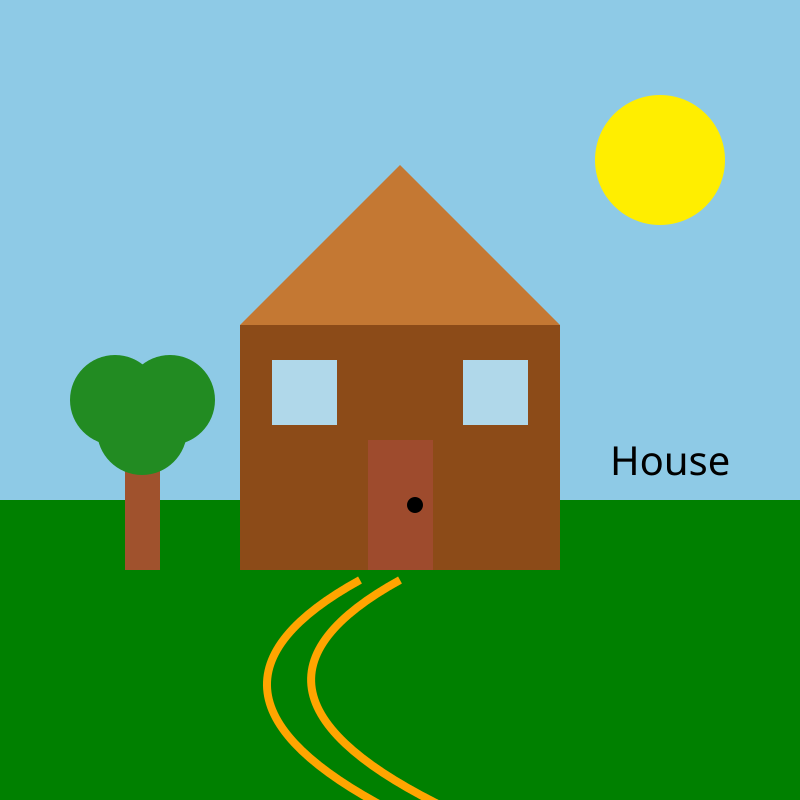

Step 1: SVG House & Garden (Comparison)
Draws out the vector instances based on the primitive shapes, comparing the base exercise file against the refactored, grouped version.

Step 2: Coordinate System Annotations
SVG coordinates start at (0,0) in the top-left corner. Horizontal distance increases to the right (+X), and vertical distance increases downward (+Y).
1. <rect> Coordinate Breakdown
Code: <rect x="240" y="325" width="320" height="245" />
Top-left anchor begins at (240, 325), spanning 320 units right and 245 units downward.
2. <circle> Coordinate Breakdown
Code: <circle cx="660" cy="160" r="65" />
Center point anchored at (660, 160) with a radius extending 65 units outwards.
3. <polygon> Coordinate Breakdown
Code: <polygon points="400,165 240,325 560,325" />
Constructed by sequentially connecting 3 coordinate vertices: (400, 165) → (240, 325) → (560, 325).
4. <path> Coordinate Breakdown
Code: <path d="M 450,810 Q 200,690 400,580" />
Starts at (450, 810) via MoveTo (M), curving toward destination (400, 580) guided by control point (200, 690).
5. <text> Coordinate Breakdown
Code: <text x="610" y="475">House</text>
Anchored by the starting point of the font baseline at coordinate (610, 475).
Coordinate and Position Comparison Table
Below is a detailed element-by-element analysis comparing the initial coordinates and attributes to the modified layout.
| Element ID | SVG Shape Type | Before Coordinates / Attributes | After Coordinates / Attributes | Movement / Change Description |
|---|---|---|---|---|
| #sun | <circle> | cx="660", cy="160", r="65" |
cx="670", cy="140", r="70" |
Shifted 10px right, 20px up; added warm orange aura stroke with dasharray styling. |
| #chimney | <rect> | None (Added in Step 3) | x="470", y="150", w="45", h="90" |
New chimney structure placed behind roof with layered opacity smoke puffs. |
| #house-body | <rect> | x="240", y="325", w="320", h="245" |
x="240", y="325", w="320", h="245" |
Position retained; updated fill from flat brown to warm tone with 3px border stroke. |
| #house-roof | <polygon> | points="400,165 240,325 560,325" |
points="400,140 220,325 580,325" |
Apex raised by 25px (cy 165 → 140); eaves widened by 20px on both sides with contrasting trim. |
| #house-windows | <g> | 2x separate <rect> elements at (272, 360) & (463, 360) |
<g> with transform="translate(270, 360)" & translate(460, 360) |
Consolidated into group <g> with unified fill/stroke, pane dividers, and transform positioning. |
| #door | <rect> | x="368", y="440", w="65", h="130" |
x="365", y="435", w="70", h="135" |
Enlarged width by 5px and height by 5px; shifted 3px left and 5px upward with border stroke. |
| #door-knob | <circle> | cx="415", cy="505", r="8" |
cx="420", cy="505", r="6" |
Shifted 5px right to fit widened door; changed color to brass metallic with stroke outline. |
| #tree-trunk | <rect> | x="125", y="420", w="35", h="150" |
x="110", y="410", w="40", h="160" |
Shifted 15px left, widened by 5px, heightened by 10px with rounded corners (rx="3"). |
| #tree-foliage | <g> | 3 circles at cx="115, 170, 142" |
3 circles at cx="100, 160, 130" |
Shifted left alongside trunk; expanded radii and added two-tone forest green highlights. |
| #garden-fence | <g> | None (Added in Step 3) | <g> at x="20, 45, 70", y="490" |
Added 3 picket fence posts joined with a crossbar on the left garden area. |
| #garden-path | <g> | 2 parallel lines with stroke-width="8" |
d="M 450,810 Q 200,690 400,570" |
Merged into a solid wide cobblestone path (stroke-width="14") with dashed center lane. |
| #text-label | <text> | x="610", y="475", font-size="40" |
x="610", y="475", font-size="36" |
Position preserved; adjusted font weight to bold with darker charcoal fill. |